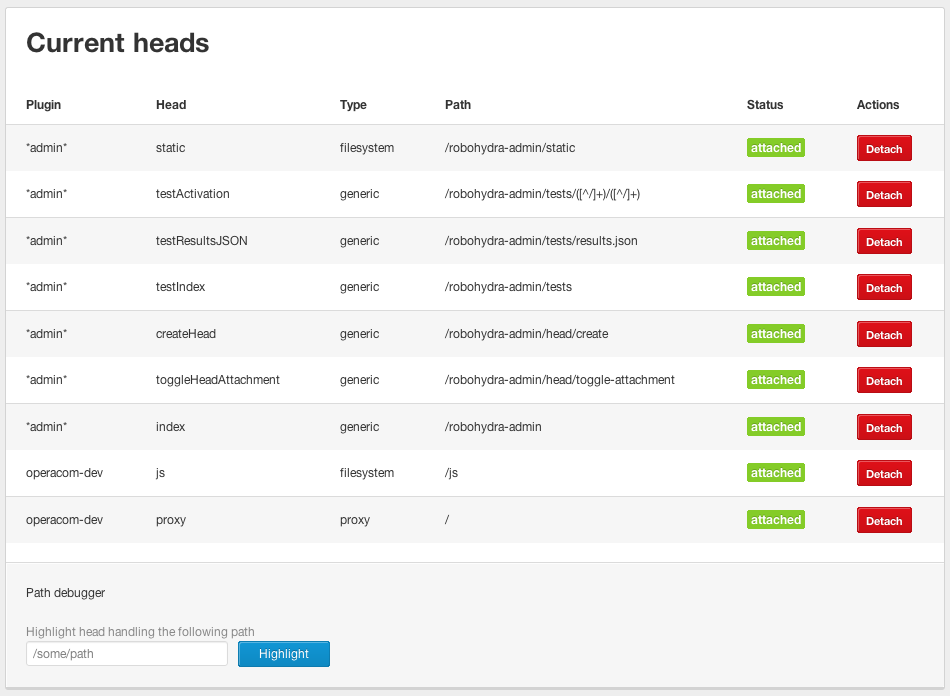

Robohydra: a new testing tool for client-server interactions
Introduction
HTTP is the most used protocol on the internet. Most APIs available on the internet use it — not only web pages, but also mobile applications, public APIs, programs for backend service integration, etc. Considering how much software uses HTTP to talk to other software, it's surprising that there aren't many tools to assist us in situations where we want to test communication between client and server across HTTP.
RoboHydra is a web server designed precisely to help you write and test software that uses HTTP as a communication protocol. There are many ways to use RoboHydra, but the most common use cases are as follows:
- RoboHydra allows you to combine a locally stored website front end with a back end sat on a remote server, allowing you to test your own local front end installation with a fully functional back end, without having to install the back end on your local machine.
- If you write a program designed to talk to a server using HTTP, you can use RoboHydra to imitate that server and pass custom responses to the program. This can help you reproduce different bugs and situations that might be otherwise hard, if not impossible, to test.
This article will take you through the basics of how RoboHydra works and how to install and use it at a basic level; at the end you will explore the first scenario listed above. Future articles will explore the second scenario listed above, and look at more advanced uses of RoboHydra.
A RoboHydra's anatomy
A RoboHydra web server is composed of many heads. A RoboHydra head is a piece of software that serves requests for a certain URL path, and defines a certain behaviour for that head to apply to that URL. For example, a RoboHydra server could have one head listening in /articles/newest that returns a fixed list of articles, another head listening in /static that proxies HTTP requests to the production server, and so on.
The behaviour of each head is determined by its type: there are heads that always return a fixed response, heads that proxy requests to another server, heads that serve files from the local filesystem, heads that execute a given JavaScript function, etc. You can program your own heads to define whatever behaviour you want.
When a RoboHydra server receives a request, it will go through all its heads in order, trying to find one that matches the URL of the incoming request. When it finds one, it will make that head process the request.
RoboHydra runs as a Node JS package. That means it is written in JavaScript but runs on the command line, not in the browser (remember — it's a server, not a client!)
Installing RoboHydra
You can essentially install and use Robohydra wherever you like on your local drive, but you need to choose a single directory to do your installation and work inside. Therefore, before installing anything, we'll create a directory called devo-robohydra that will contain all the files created for this article, and the RoboHydra installation itself. Execute all commands from this directory: RoboHydra uses relative paths to find its files.
-
The first step towards using RoboHydra on your computer is to make sure you have Node JS installed (you can check by typing
node -vin a terminal; you should get at least versionv0.6.0). If not, you'll have to install Node JS first. You can compile Node from source or download the pre-compiled binaries (.pkg, .exe, etc.) for the platform of your choice — see nodejs.org for more. -
Next, install RoboHydra itself by typing
npm install robohydrain your command line. You should end up with RoboHydra installed inside the directory devo-robohydra/node_modules/robohydra. Once installed, you don't actually need to touch anything inside the node_modules directory.
Note: You can also install RoboHydra by downloading it directly from the RoboHydra project on GitHub and putting it inside a manually created node_modules directory.
RoboHydra basics
Once installed, you can run RoboHydra from your working directory by invoking your own custom configuration files like so:
./node_modules/.bin/robohydra configuration-file-nameOr, if you add node_modules/.bin to your $PATH, simply with:
robohydra configuration-file-nameSo robohydra is run from inside the node_modules directory, and your configuration files are placed inside the root of your working directory, which in this case is devo-robohydra.
RoboHydra configuration files are simple JSON files that specify a list of plugins to be loaded. Plugins are special scripts that define one or more heads that you want to load together. A configuration file loading two plugins, monitor and dev-proxy, would look like this:
{
"plugins": [
{"name": "monitor", "config": {}},
{"name": "dev-proxy", "config": {}}
]
}The actual code of your plugins is written in JavaScript, and needs to be stored in a directory robohydra/plugins, placed inside your working directory. So by default, the example plugins mentioned above would be loaded from devo-robohydra/robohydra/plugins/monitor/index.js and devo-robohydra/robohydra/plugins/dev-proxy/index.js. We will see how to write a full plugin in the example that follows.
For more example plugins and configuration files, look in the devo-robohydra/node_modules/robohydra/examples directory.
Using RoboHydra as a proxy
As we explained earlier, one of the situations in which RoboHydra can be useful is when you're developing the front end of a web application. Imagine you are one of the front end developers for http://www.opera.com. It would be convenient to be able to connect to some URL in your browser that behaves like opera.com, except that the front end files are served from your local filesystem, and the back end is hosted somewhere else — you don't actually need to have the whole opera.com backend on your local machine!
To achieve this you can create a simple RoboHydra web server that serves local files for any requests starting with a certain path containing your local code (for example /js/), and proxies every other request (e.g. /developer/tools) to http://www.opera.com.
Writing a proxy plugin
To achieve this, we'll have to write a RoboHydra plugin containing two heads: one to serve local files from /js/ and another to proxy everything else to http://www.opera.com. The former will serve static files, and the latter will be a proxying head. The plugin code will look like this:
var heads = require('robohydra').heads,
RoboHydraHeadFilesystem = heads.RoboHydraHeadFilesystem,
RoboHydraHeadProxy = heads.RoboHydraHeadProxy;
exports.getBodyParts = function(config) {
var projectPath = config.rootpath || '.';
return {
heads: [
new RoboHydraHeadFilesystem
(
{
name: 'js',
mountPath: '/js',
documentRoot: projectPath + '/static/js'
}
),
// When none of the above heads match, this head
// always matches
new RoboHydraHeadProxy
(
{
name: 'proxy',
mountPath: '/',
proxyTo: 'http://www.opera.com',
setHostHeader: true
}
)
]
};
};-
We'll call our plugin
operacom-dev: save the above code as devo-robohydra/robohydra/plugins/operacom-dev/index.js. -
Now create a configuration file called operacom-dev.conf inside devo-robohydra with the following contents:
{ "plugins": [ {"name": "operacom-dev", "config": {"rootpath": "operacom"}} ] } -
As a last step, you'll have to download the JavaScript files for www.opera.com and uncompress the ZIP file in the devo-robohydra directory.
Now you should have all these files and directories in devo-robohydra:
- node_modules, containing the installed robohydra package.
- robohydra/plugins/operacom-dev, containing your plugin.
operacom-dev.conf, your configuration file.- The operacom/static/js directory, containing your front-end files for www.opera.com.
RoboHydra in action
Now that everything is in place, you can start the custom server by telling RoboHydra which configuration file it should load:
./node_modules/.bin/robohydra operacom-dev.confRoboHydra will then listen on port 3000. This means you can go to http://localhost:3000 with your browser, and you'll see opera.com. However, if you modify the files under operacom/static/js, you'll see the changes immediately: you could be a front-end developer for www.opera.com!
Note: To start RoboHydra listening on a different port, you need to start it and include the -p flag, followed by the desired port number. So for example, ./node_modules/.bin/robohydra -p 3001 operacom-dev.conf would start it on port 3001.
Let's see this in action. Open operacom/static/js/mainmenu.js and find the following function:
frm.onsubmit=function() {
if(this.words.value=='Search www.opera.com'||this.words.value=='') {
alert('Please enter a search term.');
this.words.focus();
return false;
}
}If you click on the search button at the bottom of the page without typing in any words, the alert box will appear to tell you what to do. Let's try changing this function to the following, to present the error message to the user in a different way:
frm.onsubmit=function() {
if(this.words.value=='Search www.opera.com'||this.words.value=='') {
wrd.value = 'Please enter a search term.';
wrd.style.color = 'black';
wrd.style.fontWeight = 'bold';
this.words.focus();
return false;
}
}Save your JS file, then go to http://localhost:3000 with your browser and reload the page to make sure you're using the latest JavaScript files. If you go to the bottom of the page and click on the search button without typing any words, you'll see the updated effect. This illustrates just how great RoboHydra is for such experimentation.
The admin interface
Another RoboHydra feature that comes in handy in many situations is the admin interface. From it you can, among other things, see the available heads, create heads with fixed content, and enable and disable heads — see Figure 1. It's always available at http://localhost:3000/robohydra-admin/.

Figure 1: The RoboHydra admin interface. Note that our custom heads are listed, along with attach and detach buttons.
In the context of using RoboHydra as a front-end development proxy, one practical use of the admin interface is to compare how the site behaves with our local JavaScript code and the original code. To do so, we only have to detach and reattach the "js" head. When the head is detached, only the "proxy" head will be active, so all requests will pass through to www.opera.com.
Summary
This concludes our short tour of RoboHydra. By now you should be familiar with how to install and use RoboHydra and write a simple plugin for it. You should also now be well aware of how useful it can be! In subsequent articles, we'll show you some more interesting and complex use cases, like emulating a server to build a test suite or saving and replaying traffic to allow you to work offline.
Esteban Manchado Velázquez

Esteban is a quality assurance engineer, project manager, developer, and other things at Opera. He has worked on projects like Opera Link, Opera Unite, My Opera, Dev Opera and others. Outside work, he likes music, playing drums, reading... and hacking, of course.
This article is licensed under a Creative Commons Attribution 3.0 Unported license.
Comments
-
so it even has GUI ? cool.
-

Hi,
-
Constantine: yes, it has an admin interface where you can see the status of the server. You can even create dynamic heads for cases like "I need URL path /foo/bar to return this-and-that content from now on", without restarting RoboHydra or writing any code.
No new comments accepted.Constantine Vesna
Tuesday, August 7, 2012
tgvrssanthosh
Wednesday, August 8, 2012
If i'm not wrong, the same behavior can be achieved using Apache Webserver by having configuration files with virtual hosts right? Are there any advantages over Apache?
Esteban Manchado Velázquez
Wednesday, August 8, 2012
tgvrssanthosh: good question. Sure you can achieve the same with Apache, the point of RoboHydra is that it's *way* more convenient in most (testing-related) situations. This article doesn't quite show the biggest differences, but off the top of my head:
* RoboHydra is more light-weight than Apache, both in size (disk and memory), and in complexity (things you need to learn to use it fully, amount of documentation you need to check, number of concepts you need to understand what's going on). Many people will find RoboHydra easier to install and configure than Apache.
* You can add behaviour to the server dynamically (ie. without having to write code or even restart RoboHydra; see the "Create new head" in the web interface, which will probably be improved in the next version!), and even enable/disable it from the admin interface.
* In RoboHydra it's very easy to prepare test cases and test suites. This is something that will be explained in the second article, but for now you can check the documentation at http://robohydra.org/tutorial/advanced/ ("Test suites" section). In a nutshell, let's say you have some testing scenario A that needs to return "A" in /tools/search and "success" in /login, and a scenario B that needs to return "B" in /tools/search and "anonymous" in /login. With Apache it's not easy to change between scenario A and scenario B without changing some code/configuration and restarting. With RoboHydra, you simply go to the admin interface and activate scenario A or B, as needed (you don't actually have to go there with a browser and click, you can automate it with a script by sending an appropriate POST request).
* When you need to write code to make custom behaviour, with Apache you'd need to choose a language/technology, configure it in Apache and write a program that does what you want. You're basically on your own and have to think of everything yourself. In RoboHydra you simply write a small Javascript function that will receive the request and response objects. And of course, many people are more comfortable writing Javascript than other languages, so even if the effort wasn't less, writing Javascript it more convenient for them.
Hope that helps :-)